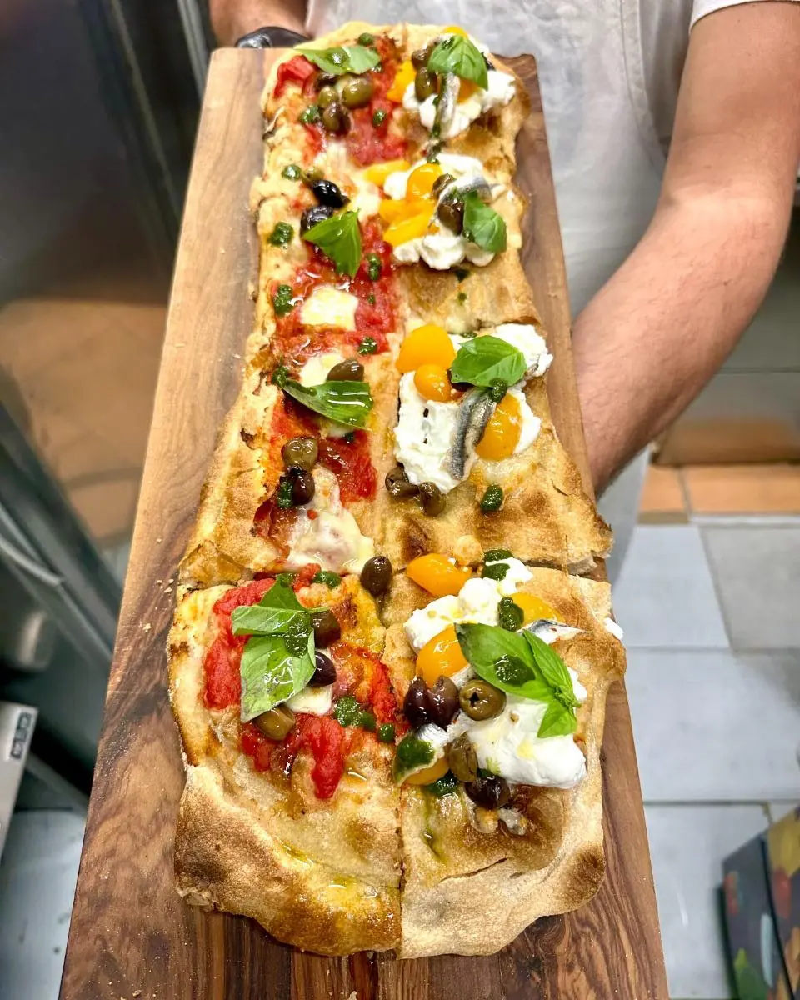
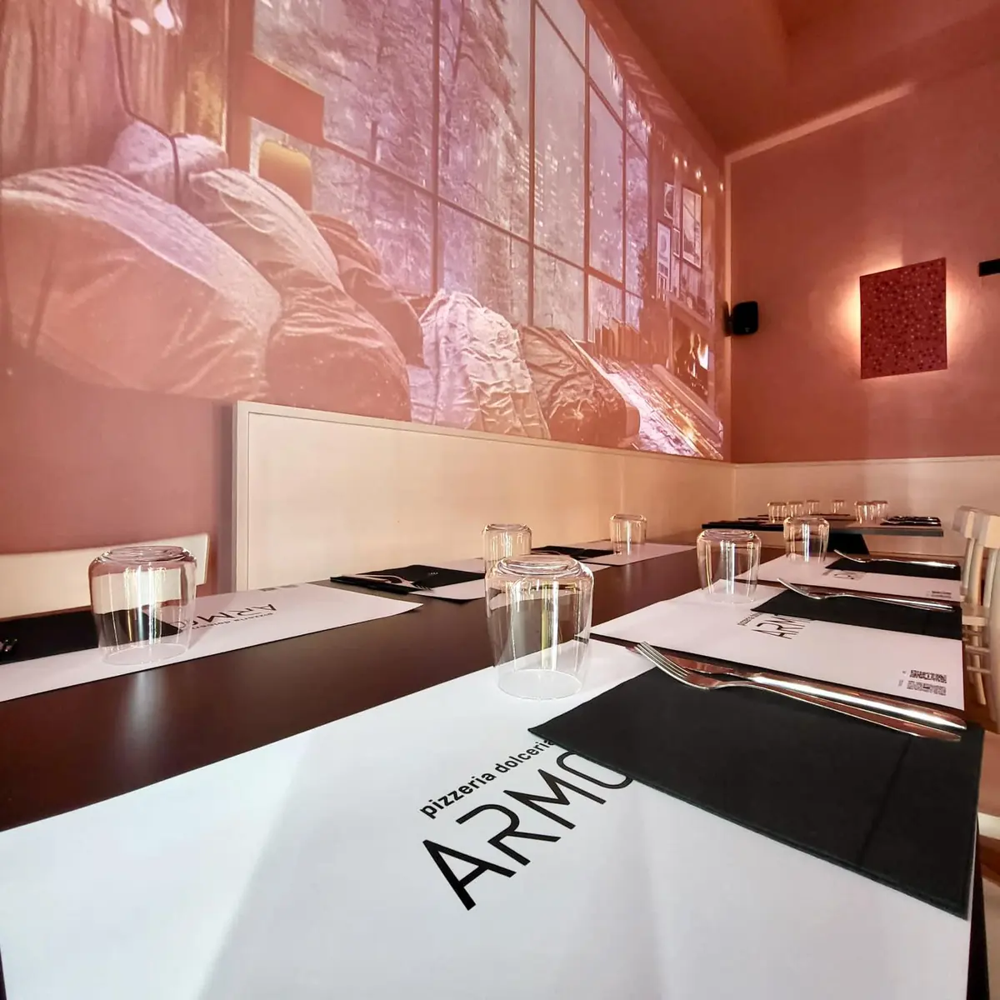
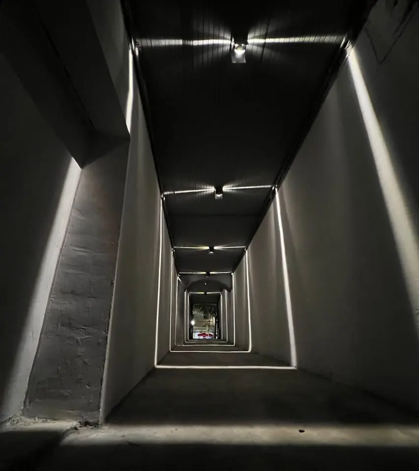

Una pizza a pala, servita sulla tavola di legno.

Pizzeria e pasticceria · Vallo della Lucania
Armoniaoltre il gusto
Pizzeria e pasticceria a Vallo della Lucania, in P.za Vittorio Emanuele II, 35.
4,9138 recensioni GoogleP.za Vittorio Emanuele II, 35, 84078 Vallo della Lucania, SA

La sala con i tavoli apparecchiati.

Il corridoio d'ingresso con le luci. 4,9 su 5 su Google, 138 recensioni.
Recensioni
Cosa dicono i clienti
4,9 su 5 · 138 recensioni su Google. Qui sotto alcune, riportate senza modifiche (i nomi sono abbreviati).
★★★★★
Una pizza diversa dalla tradizionale tonda in piatto....ma meravigliosa! Divisa in comodi spicchi diversi tra loro x gusto , tutti a scelta e tutti con prodotto di qualità! Un impasto croccante ed alveolato , molto bene condito e di sapore. Unito alle birre artigianali in bottiglia ....da provarle tutte! Noi abbiamo scelto indecisa...ovvero 4 gusti xbdue spicchi a gusto ....consigliato il gusto Armonia e Classica ...da ritornarci subitoooo!!!
★★★★★
Una pizza unica che non si può descrivere, una versione talmente nuova e gustosa che si deve semplicemente provare. Ingredienti di eccellenza. Servizio attento e cortese. Una bella scoperta che ti fa venir voglia di tornare presto per gustare nuovi sapori.
★★★★★
Siamo stati questa sera in questo locale trovato per caso su google....ho letto le recensioni ed erano tutte ottime,non essendo della zona ma qui in vacanza ci siamo fidate di esse e non potevamo fare scelta migliore..
SUPERLATIVO è l aggettivo giusto per descrivere la pizza che abbiamo mangiato.
Una pizza servita su una pala di legno già tagliata a fette con possibilità di scelta di più gusti...
Abbiamo preso la nerano e la nonna mena e sono state divine ...ogni sapore si distingue perfettamente e in più si percepisce al palato la qualità delle materie prime.
Abbiamo poi preso un croccante di patate e un bocconcino entrambi ottimi.
Per quanto riguarda il personale attento e gentile ,ci ha servito una ragazza giovanissima ,delicata nei modi che trasmetteva tranquillità.
Consiglio a tutti questo locale e qualora tornassimo in zona sarà la prima tappa che faremo!!!
Complimenti
★★★★★
Ho cenato in questo ristorante l'altra sera e sono rimasto davvero colpita. Cibo delizioso e servizio impeccabile. Un ringraziamento ad Antonello e a tutto il personale per la gentilezza e l'attenzione. Complimenti!
Orari e dove siamo
Vieni a trovarci
| Lunedì | Chiuso |
|---|---|
| Martedì | 19:00–24:00 |
| Mercoledì | 19:00–24:00 |
| Giovedì | 19:00–24:00 |
| Venerdì | 19:00–24:00 |
| Sabato | 19:00–24:00 |
| Domenica | 08:00–13:00 · 19:00–24:00 |
Armonia oltre il gusto
P.za Vittorio Emanuele II, 35, 84078 Vallo della Lucania, SA
097 4359833
Orari della scheda Google: nei festivi possono cambiare, chiamateci per conferma.
P.za Vittorio Emanuele II, 35, 84078 Vallo della Lucania, SA
Contatti
Scrivici
Un messaggio su WhatsApp, o una telefonata: vi risponde Armonia.